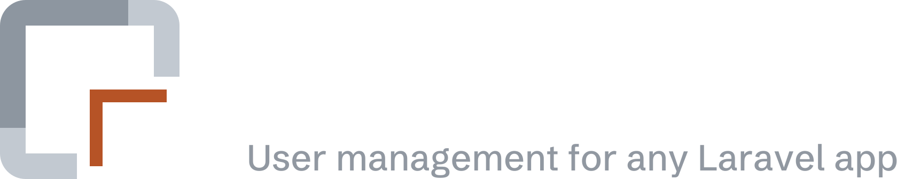
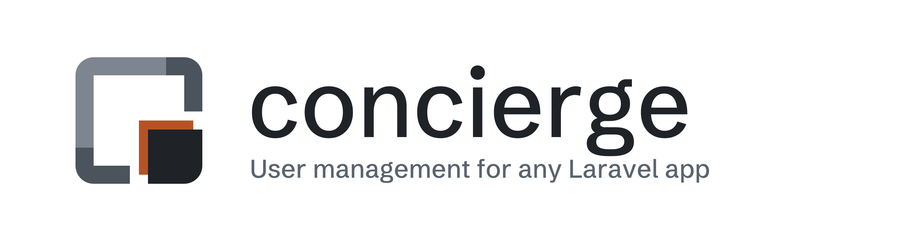
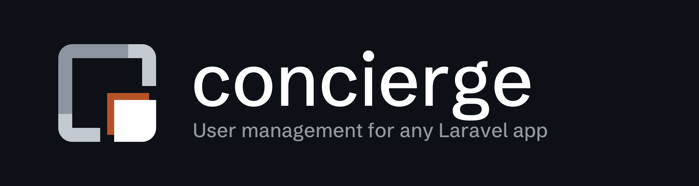
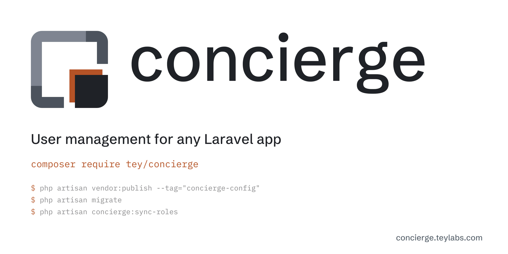
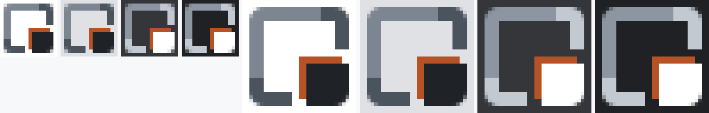

Concierge brand kit
Nook: the app is the whole square; concierge keeps to one corner of it, out of the way until needed, and its Tey orange shadow falls into the app. Grey ramp on white and #0D1117; no cream. Every file below is generated by build.mjs.
Mark, logo, lockup, favicon, banner
On white
favicon.svg follows the colour scheme of the page viewing it; the 16 / 32 / 48 PNGs are the light ramp.
On #0D1117
favicon.svg follows the colour scheme of the page viewing it; the 16 / 32 / 48 PNGs are the light ramp.

Mono and reversed
mark-mono.svg: one ink, for print, stamps and embroidery. The shadow becomes a thinner L with a gap, so it stays separate from the piece.

mark-reversed.svg: all white, for dark or orange fields.
Palette
| part | on white | on #0D1117 |
|---|---|---|
| far the frame’s far arm (left and top) | #7D8590 3.73:1 | #8D96A0 6.31:1 |
| near the frame’s near arms (the ends that meet the corner piece) | #4B535D 7.79:1 | #C2C9D1 11.33:1 |
| piece the corner piece, and the wordmark | #1F2328 15.80:1 | #FFFFFF 18.92:1 |
| shadow Tey orange, one value on both surfaces | #B65326 4.94:1 | #B65326 3.83:1 |
| muted taglines and secondary text | #59636E 6.11:1 | #9198A1 6.50:1 |
Opaque tiles (no baked corner radius)
Banners on their own background


Share card (og:image, 2400 × 1200)

Favicon check: 16 and 32 px on four tab colours, at 8×
